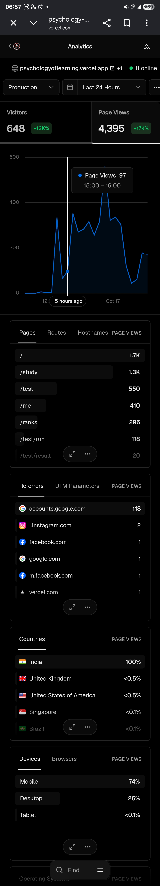

Built for a couple of friends. Used by 877 people.
Coffee aur Code started on the evening of Thursday 15 October as a flashcard page for me and a couple of friends cramming for the NPTEL Psychology of Learning exam. Within two days it was a real website with strangers on it: Google sign-in, a 100-question ranked test graded on the server, a leaderboard, and, when I checked at seven on Saturday morning, 11 people online at the same moment.
The exam is over, the analytics are switched off and the site is winding down. Before it goes, this page puts down what the numbers say happened and what running it taught me. Everything below comes from four tables exported from Supabase and two snapshots of the Vercel dashboard. The sources are listed at the end.
COFFEE AUR CODE
table for 3 · seated 877 16–17 Oct 2026 · IST
Visitors
877
Page views
5,881
Google sign-ins
89
Ranked tests done
193
Answers graded
18,199
Flashcards graded
3,650
Perfect 100s
34
Online at 06:57 Sat
11
LAST ORDERS · THANK YOU
01 · Timeline
Four days, start to finish
From the first commit to the last activity in the database was about 50 hours. The commit times come from Git; the rest from the data.
First commit: the 130 assignment questions as one flashcard page, plus the assignment PDFs. The audience is me and a couple of friends.
The real app goes up on React, Supabase and Vercel: flashcards, a quiz, a searchable list, the ranked test and a leaderboard.
The first fixes come from real phones: an 8-digit sign-in code the form wouldn't accept, the card flip overflowing on iPhone, a crash on sign-out. Vercel Web Analytics goes in with the same commit.
The oldest flashcard grade in the database. (Progress made before signing in is uploaded with its original time when you sign in, so cards show up before anyone had a name.)
“somebody got it when they tried to signup.” Sign-up returns an HTTP 504: the email-code request is timing out at the mail-server hop. The same day, email sign-in is replaced with one-tap Google sign-in. L3.06 and L4.09 tell that story in full.
Vercel's visitor graph jumps from almost nothing to 80–95 visitors an hour. The link has started going round.
The oldest leaderboard name in the export.
The busiest flashcard hour of the whole run: 484 cards graded.
I screenshot the dashboard: 648 visitors and 4,395 page views in the last 24 hours, 11 people online.
The busiest hour for the ranked test: 27 tests started.
The last new player claims a name, and the last activity of any kind is logged.
The 42-page study series on how the app was built is finished.
Exam over, analytics off, data exported. This report.
02 · Rhythm
Flashcards at night, tests in the morning
Flashcards graded, tests started and new names per hour, India time. The three rows share one time axis, but each row has its own scale, so compare the shapes rather than the heights.
Swipe the chart sideways to see all of it →
Show the numbers
Hour (IST)
Cards graded
Tests started
Names claimed
Fri 16 Oct, 10:00–11:00
4
0
0
Fri 16 Oct, 11:00–12:00
9
0
0
Fri 16 Oct, 14:00–15:00
23
0
0
Fri 16 Oct, 16:00–17:00
13
0
0
Fri 16 Oct, 17:00–18:00
108
0
0
Fri 16 Oct, 18:00–19:00
47
3
3
Fri 16 Oct, 19:00–20:00
111
3
5
Fri 16 Oct, 20:00–21:00
61
3
2
Fri 16 Oct, 21:00–22:00
92
4
2
Fri 16 Oct, 22:00–23:00
206
11
7
Fri 16 Oct, 23:00–00:00
484
8
7
Sat 17 Oct, 00:00–01:00
247
16
8
Sat 17 Oct, 01:00–02:00
310
17
9
Sat 17 Oct, 02:00–03:00
302
13
6
Sat 17 Oct, 03:00–04:00
17
2
2
Sat 17 Oct, 04:00–05:00
6
2
1
Sat 17 Oct, 05:00–06:00
54
7
3
Sat 17 Oct, 06:00–07:00
16
19
10
Sat 17 Oct, 07:00–08:00
401
27
6
Sat 17 Oct, 08:00–09:00
282
17
2
Sat 17 Oct, 09:00–10:00
301
12
2
Sat 17 Oct, 10:00–11:00
151
12
4
Sat 17 Oct, 11:00–12:00
183
13
3
Sat 17 Oct, 12:00–13:00
163
17
3
Sat 17 Oct, 13:00–14:00
47
7
2
Sat 17 Oct, 19:00–20:00
12
0
0
Friday night was for flashcards. Card grades climbed all evening, hit 484 in the 23:00 hour and stayed above 240 an hour until 03:00. In that 23:00 hour only 8 tests were started. Then almost everything stopped for about three hours.
Saturday morning brought the cards back, and this time the tests came with them: 401 cards graded and 27 tests in the 07:00 hour, and the test row stays busy until early afternoon. Nobody told people to read the cards the night before and test themselves in the morning; that is just how they used it. New names follow the same two waves, so this was a crowd turning up together, not a few people grinding alone.
03 · Reach
Who came, and how far they got
From a visit to a second ranked test. The first step is Vercel's visitor estimate for 16–17 October; every later step is counted from the database.
Visited (Vercel estimate)877
Signed in with Google89
Claimed a leaderboard name87
Started a ranked test85
Finished one66
Came back for another39
Show the numbers
Step
People
Share of visitors
Visited (Vercel estimate)
877
100.0%
Signed in with Google
89
10.1%
Claimed a leaderboard name
87
9.9%
Started a ranked test
85
9.7%
Finished one
66
7.5%
Came back for another
39
4.4%
About one visitor in ten signed in. Once people signed in they went all the way: of the 87 who claimed a leaderboard name, all but two started a ranked test, and 39 came back for at least one more. The real drop-off is at the front door, which is normal. Plenty of people open a link from a group chat, look at the home page and leave.
Treat the first bar as an estimate. Vercel counts one person on a phone and a laptop as two visitors, and the two sources don't measure the same thing. The 117 visitors listed as coming “from accounts.google.com” are not Google search traffic. They are people coming back from the Google sign-in screen, which is a decent second count of sign-ins.
04 · Audience
Phones, India, and almost no referrers
What the Vercel dashboard showed before I switched it off.
Unique visitors per page
16–17 October, from the dashboard export
/ · home741
/study · flashcards603
/test · test intro309
/me · account215
/ranks · leaderboard209
/test/run · in a test112
/test/result · results28
Visitors by operating system
Share of visitors, 16–17 October
Android68%
iOS15%
Windows11%
Mac3%
GNU/Linux3%
74% of page views came from phones, 26% from desktops and almost none from tablets. Android alone was 68% of visitors, and 61% used Chrome Mobile. The evening spent on the iPhone card flip and the folded Galaxy screen was not polish. It was the main product.
India was 99–100% of the traffic, with a handful of visits from the UK, the USA, Singapore and Brazil. The bounce rate was 26%: three in four visitors opened a second page.
Nobody “found” the site. Leave out the Google sign-in round trip and the referrer list is two visits from Instagram, two from Facebook, one from Google search and one from Vercel. Links pasted into WhatsApp and other chats usually arrive with no referrer, so they show up as direct visits. That is most likely how most of the 877 people arrived: a friend sent the link.

The screenshot I took at 06:57 on Saturday, last 24 hours. Scroll inside it.
05 · The ranked test
Most people aced it, which was the point
193 finished tests from 87 players. Each test drew 100 random questions from the same 130 that were on the flashcards, and the server graded every answer.
97
median score (mean 89.5)
161
of 193 tests scored 90 or more
34
perfect 100s
7.8 min
median time for 100 questions
Finished tests by score
Bands of ten points (0s = 0–9, 90+ = 90–100)
Zoomed in: 90 to 100
Where 161 of the 193 tests landed
The scores bunch at the top because the test is a closed set. There are only 130 questions, every test uses 100 of them, and all of them are on the flashcards. By the second sitting you have met nearly every question. As exam prep that's exactly what I wanted: know these 130 cold. As a leaderboard it means the top is crowded, which comes back in a minute.
The low scores are mostly not real attempts. 9 tests were submitted in under two minutes (1 in 14 s, 2 in 16 s, 1 in 17 s, 1 in 18 s, 2 in 18 s, 7 in 30 s, 1 in 31 s, 2 in 31 s, 12 in 59 s). Those are people opening the test to see what it looks like and submitting to get out. Another 20 tests were started and never submitted. With those set aside, almost nobody actually did badly.
Average score by time taken
Out of 100. The under-5-minute group includes the 9 peeks.
under 5 min · 33 tests70.4
5–10 min · 97 tests95.8
10–20 min · 57 tests90.4
20+ min · 6 tests84.8
Show the numbers
Time taken
Average score
under 5 min · 33 tests
70.4
5–10 min · 97 tests
95.8
10–20 min · 57 tests
90.4
20+ min · 6 tests
84.8
06 · Leaderboard
The leaderboard turned into a speedrun
Rank goes by best score, then by fastest time. 22 players reached 100, so the top was settled on the clock.
#
Name
Best
Time
Per question
Tests taken
1
Pratz
100
3.7 min
2.2 s
2
2
Sp41-2 .0
100
3.8 min
2.3 s
1
3
Sidmaniac
100
4.0 min
2.4 s
13
4
Ghodarpit
100
4.3 min
2.6 s
7
5
Sp41
100
4.4 min
2.7 s
6
6
Chunnu munnu
100
4.9 min
2.9 s
4
7
Enamenadeka
100
5.1 min
3.1 s
8
8
Steve Rogers
100
5.3 min
3.2 s
1
9
Uuluuu
100
5.5 min
3.3 s
2
10
pizza
100
5.6 min
3.3 s
7
The winner answered 100 questions correctly in 3.7 minutes, 2.2 seconds a question. That isn't reading any more; it's recognising a question from its first few words. Once the scores tied, the only way up was to go faster, and people did: the most persistent player, Sidmaniac, took the test 13 times and finished #3.
Two of the top five, “Sp41” and “Sp41-2 .0”, look like the same person on two Google accounts. The server stops anyone faking a score, but nothing stops one person from having two accounts. Among friends that's funny. With real stakes it would be a problem.
07 · Retakes
Taking it again worked, just as the subject predicts
39 players took the ranked test more than once. Each line joins one player's first score to their latest.
Latest score higher (35)Same score (4)Average
Swipe the chart sideways to see all of it →
On average, players went from 85.9 on their first test to 95.3 on their latest, and 35 of the 39 ended higher than they started. Nobody's latest score was below their first, and three of the four who didn't improve were already on 100. The biggest jumps came from very low first attempts: one player went from 1 to 100 over seven tests, another from 40 to 97.
This is the testing effect, a classic result in the psychology of learning and a close cousin of the course's week 3 material on memory and retrieval: pulling an answer out of memory makes it stick better than reading it again. The people using a Psychology of Learning revision site were acting out one of its lessons. One caveat: the test reused the same 130 questions, so some of the gain is remembering those exact items. For this exam that's no bad thing.
08 · Weak spots
What tripped people up
18,199 answers graded. These are the questions answered correctly least often (each was seen 130–145 times), with how many people's latest flashcard grade for them was “Again”.
Question
Week
Correct
“Again”
The ___ orientation to learning has a quality of personal involvement: the whole person in both feeling and cognitive aspects being in the learning event.Answer: humanistic · most picked wrong: cognitive (22×)
7
69%
20
Which of the following is an example of meta-cognition skills?Answer: Self-monitoring · most picked wrong: All of the given (35×)
4
75%
16
Which of the following is false about learning according to Gagne's definition?Answer: It is simply ascribable to processes of growth · most picked wrong: None of the above (24×)
7
78%
18
Noticing a difficult emotion and slowing down or resisting any impulsive action that may follow highlights ___ component of emotional intelligence.Answer: Self-regulation · most picked wrong: Empathy (28×)
6
78%
14
___ thinking is the ability to create mental representations of objects, places, events, or people in your mind.Answer: Symbolic · most picked wrong: Creative (23×)
4
82%
13
Students who consider intelligence as a malleable entity tend to focus on their obstacles instead of goals.Answer: False · most picked wrong: True (25×)
10
82%
13
The three major types of learning described by ___ psychology are classical conditioning, operant conditioning and observational learning.Answer: behavioral · most picked wrong: cognitive (23×)
2
82%
13
Two separate signals agree. The questions people got wrong in tests are the same ones they left on “Again” in the flashcards: the humanistic orientation question, Gagné's definition and the meta-cognition one are near the top of both lists. When the test and the self-ratings point at the same questions, that's a good sign they're measuring something real.
The wrong answers are revealing too. “All of the given” pulled 35 people away from self-monitoring. On the humanistic question people mixed up neighbouring schools of thought; on the self-regulation one they picked empathy. These are confusions between close concepts, not guesses.
Share of answers correct, by course week
The axis starts at 85% so the differences are visible. Every week was above 89%.
Swipe the chart sideways to see all of it →
Show the numbers
Week
Correct
Answers
Week 0
96.7%
1,404
Week 1
97.1%
1,426
Week 2
94.4%
1,392
Week 3
97.6%
1,388
Week 4
90.8%
1,384
Week 5
94.9%
1,369
Week 6
93.5%
1,421
Week 7
89.5%
1,385
Week 8
95.6%
1,406
Week 9
96.9%
1,376
Week 10
95.4%
1,400
Week 11
95.4%
1,399
Week 12
95.9%
1,449
Weeks 7 and 4 were the weakest. Week 7 packs many theories into ten questions (Gagné's definition, learning orientations, Bloom's domains, learning styles, ADDIE), and week 4 is kinds of thinking: symbolic, critical, creative, meta-cognition. Both are lists of similar-sounding categories. One more surprise: true/false questions went worse than multiple choice (92.5% against 95.1%). Several turn on a single word, like the not in “Psychology is not an independent science” or the hidden in “a hidden change in behavior must occur”, and a single word is easy to miss when you're answering one question every few seconds.
09 · Flashcards
The flashcard deck
Swipe right for “Got it”, left for “Again”. The database keeps one row per person per card with its latest grade, so a card swiped three times counts once.
54
people saved flashcard progress
71
median cards graded per person
13
went through all 130
7 s
median gap between cards graded
3,650 cards, by latest grade
Got it · 72%Again · 28%
Roughly one card in four was still on “Again” the last time its owner saw it.
Seven seconds between cards is about the time it takes to read a question, think of the answer, flip and swipe, so people were recalling rather than flicking through. (That gap is measured between latest grades, so it is a rough figure.) The median person graded 71 cards, a little over half the deck, and 13 went through the whole thing.
10 · What it taught me
What running a real website taught me
Building it was one skill. Having strangers use it, live, the night before their exam, was a different one.
Other people find the bug on day one
The first serious failure wasn't one I found. Someone else hit it: a 504 on sign-up, because sending the email code timed out at the mail server. Sign-in is the one path every new user has to cross, so it has to be the most boring, reliable part of the site. Swapping to Google sign-in the same day removed the email step completely.
After the switch, 117 visitors came back through Google's sign-in page.
Build for the phone in someone's hand
I wrote it on a laptop; people used it on their phones. The first-night bugs were all phone bugs: the iPhone card flip, overflow, a sign-in code field. Testing on real devices (and on eleven emulated ones in Playwright) mattered more than anything I did on desktop.
74% of page views were from phones; 68% of visitors were on Android.
Put the rules on the server
A leaderboard among friends gets competitive fast. Because the questions were picked, timed and graded in the database, and row-level security kept everyone to their own rows, the only way to climb was to actually know the answers faster. Even so, “one person, one rank” can't be enforced when one person can have two Google accounts.
One player took the test 13 times; the winner averaged 2.2 s a question.
Your audience grows without you
I built it for a few friends. It still reached 877 visitors, and the referrer data says almost none of them came from search or social media. Once strangers are on it, the small decisions get real: names on a public leaderboard, other people's data in your database, a bug the day before an exam.
87 leaderboard names, and next to no referrers.
Analytics say what; your own data says why
Vercel told me how many people came and which pages they opened. Custom events needed a paid plan, so it couldn't tell me what anyone did. Everything interesting on this page (scores, retakes, weak questions, the night-and-morning rhythm) came from my own tables, and only because every row had a timestamp and a user. Even then, flashcards keep only the latest grade per card, so I can't see how many times anyone went round the deck.
No custom events on the free plan; 18,199 answers in my own tables.
People peek before they commit
A ranked test with no practice mode gets explored by submitting it. Those near-empty attempts sit in the data and on the scoreboard. A practice round that doesn't count would have given curious people somewhere to look without polluting the rankings.
9 tests finished in under two minutes; 20 started and abandoned.
A site can have an end date
This was built for one exam, and it has done its job. Ending it on purpose is part of running it: export the data, switch off the analytics, keep the short link redirecting, and write down what happened while the numbers are still fresh.
Last activity: Saturday 17 October, 19:43 IST.
11 · Next time
If I ran it again
Add a practice test that doesn't count, kept separate from the ranked one, so peeking costs nothing.
Use the “Again” data. The weak questions were sitting in the database. Showing people their own weak cards, and bringing them back sooner (spaced repetition), is a few queries away.
Rethink the tie-break. With 22 players tied on 100, ranking by speed rewards recognising questions over understanding them. Ranking on accuracy across several attempts, or adding questions people haven't seen, would keep the leaderboard meaningful.
Log a few events of my own from day one: test opened, test abandoned, card flipped. That's a small table, not a paid analytics plan.
Expect more than the audience I planned for. Pick sign-in, names and privacy settings as if strangers will turn up, because they did.
12 · About the data
Where these numbers come from
Supabase exports, taken after the exam: profiles (87 rows), test_attempts (213 rows, 193 submitted), card_progress (3,650 rows, one per person per card, holding its latest grade) and questions (130 rows). Only signed-in people are stored: flashcard progress made before signing in is uploaded with its original timestamps once you sign in, but anyone who never signed in isn't counted here.
A profile row is created when someone saves a leaderboard name, so “names claimed” times are when people picked a name, not necessarily when they first signed in. 89 accounts appear anywhere in the data; two of them never picked a name.
Vercel Web Analytics, two snapshots that overlap but cover different windows: a dashboard export for 16–17 October (877 visitors, 5,881 page views, 26% bounce rate, visitor counts per page) and a phone screenshot of the 24 hours up to 06:57 on 17 October (648 visitors, 4,395 page views, page-view counts, devices). That's why the two don't match each other. Vercel's analytics are cookieless, so a visitor is an estimate.
All times are India Standard Time (UTC+5:30). Commit times come from git log.
“Correct” share leaves out unanswered questions. Score bands count every submitted test, peeks included.
The figures were worked out with a short Python script over the CSVs; nothing was estimated by eye.
The mug is empty and the café is closing. Thanks to everyone who swiped, tested and raced. Back to the hub